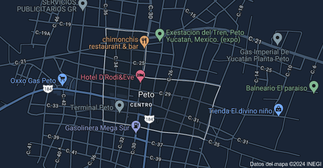

La principal actividad que se desarrolla en peto centro es el comercio minorista en la que operan cerca de 1,000 establecimientos, con un personal ocupado estimado de 667.5 personas. La colonia peto centro es la localidad de municipios peto, en yucatán, y abarca un área cercana a 65 hectáreas.

Peto en 1825, pasó a formar parte del partido de Beneficios altos, con cabecera en Tihosuco. En 1841, la población de peto adquierió el título de Villa. En 1900, se inauguró la línea ferroviaria que daba servicio de Mérida a peto. El 28 de abril de 1914, la Villa de peto se elevó a la categoría de ciudad por decreto.
| regresar al menú |